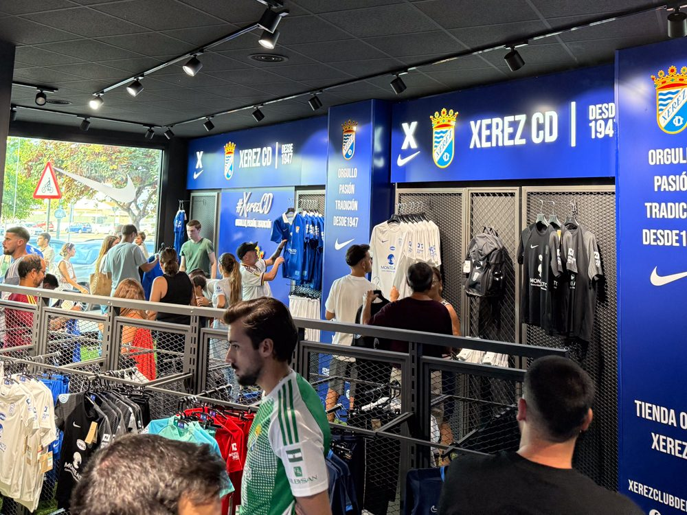

El Xerez recibe 500 entradas a 11 euros para el partido en el campo del Atlético Central

Foto: Diario XerecistaLos menores de 12 años entrarán gratis al partido del domingo, de la jornada 12 de Segunda RFEF, que empezará a las 12:00 en Alcalá de Guadaíra.
El Xerez CD ha recibido una primera remesa de 500 entradas para el partido del próximo domingo, 22 de noviembre, en el campo del Atlético Central. Cada localidad cuesta 11 euros en venta anticipada, y los menores de 12 años podrán entrar gratis. El club ha anunciado que el número de entradas podría ampliarse según la demanda.
Las entradas se venden en la sede del club, de lunes a viernes, de 10:30 a 13:30 y por la tarde a partir de las 17:00. Quien la compre en taquilla el mismo día del partido pagará 16 euros.
Cuatro victorias seguidas
El partido, de la jornada 12 del Grupo IV de Segunda RFEF, empezará a las 12:00 en el Nuevo Estadio Ciudad de Alcalá, en Alcalá de Guadaíra. El Xerez llega quinto, con 18 puntos y cuatro victorias seguidas, después de ganar 2-0 al Antoniano. El Atlético Central es undécimo, con 15 puntos.
🇬🇧 Read in English ← Volver a la portada